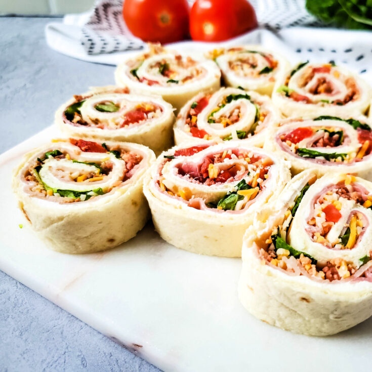

Turkey Pinwheels
Ingredients
- 8 ounces reduced-fat cream cheese
- 1 cup baby spinach, finely chopped
- ½ cup whole-milk plain strained (Greek-style) yogurt
- ½ teaspoon salt-free garlic-and-herb seasoning
- ¼ teaspoon salt
- ¼ teaspoon ground pepper
- 4 (10-inch) whole-wheat tortillas
- 1 ⅓ cups matchstick carrots
- 1 ⅓ cups alfalfa sprouts
- 3 medium plum tomatoes, seeded and thinly sliced
- 1 small yellow bell pepper, thinly sliced
- 8 ounces thinly sliced lower-sodium deli oven-roasted turkey breast